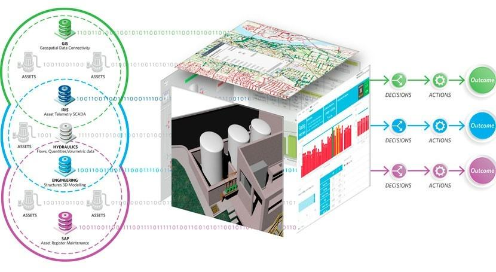
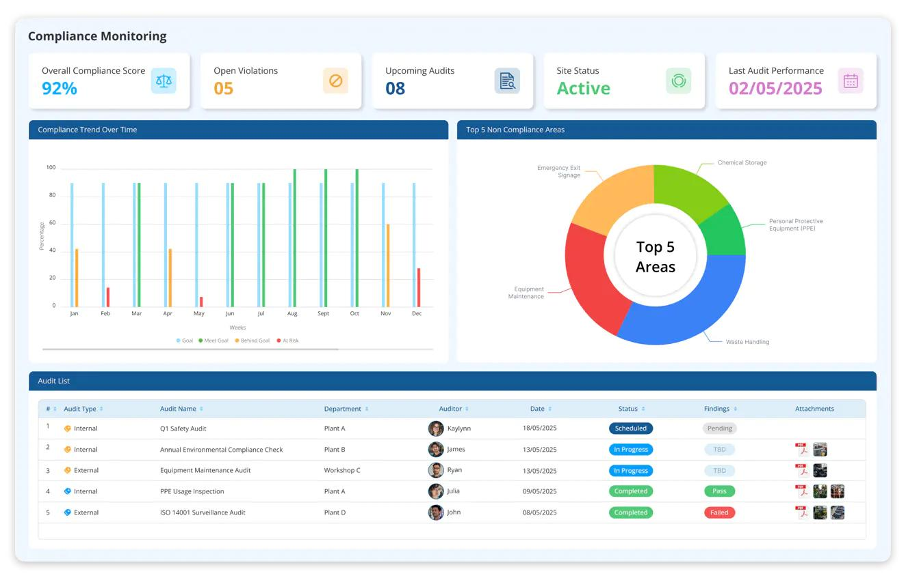
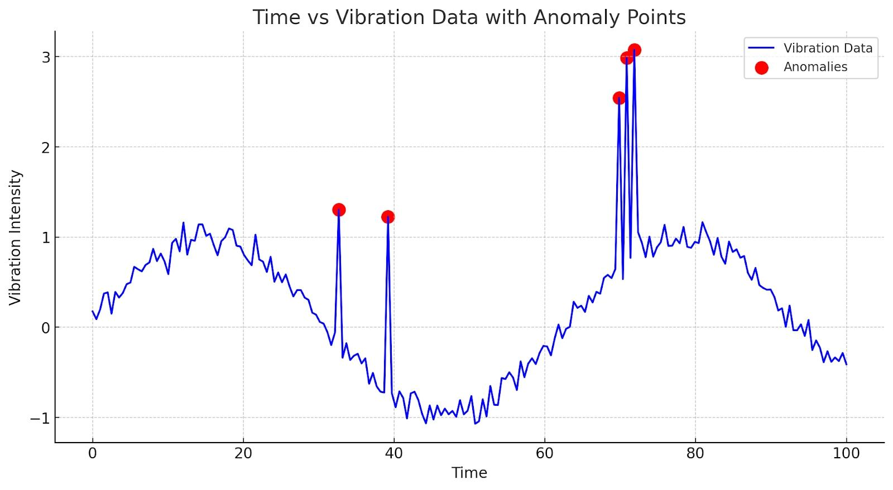
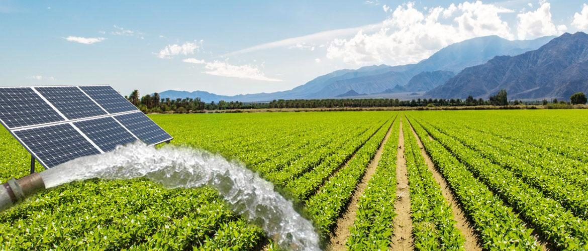

Every Layer of HydraNet's Water Intelligence
HydraNet is a hybrid cloud-edge SaaS platform built on a modular architecture React executive dashboards, FastAPI real-time telemetry backend, PyTorch Geometric GNN models, and AWS UK South data infrastructure designed to serve agricultural estates, NHS grounds, and councils without specialist hydraulic engineering expertise on-site.

GNN Hydraulic Criticality Engine
Graph Neural Networks trained on diverse hydraulic topologies compute real-time Criticality Scores for every network asset. Identifies cascading failure risk a primary manifold fault is mathematically differentiated from a redundant downstream issue.

Physics-Informed Digital Twin
Sparse sensor data from pressure, flow, vibration, and energy nodes is fused via deep learning to reconstruct full network hydraulic behavior. The digital twin models unmonitored subterranean zones delivering industrial-grade SCADA intelligence with 70% fewer sensors.

Regulatory Compliance Orchestration
EA abstraction licenses are embedded as living operational constraints. The system automatically calculates real-time consumption against daily and seasonal limits, orchestrating pumping cycles to guarantee 100% compliance with the Water (Special Measures) Act 2025.

Micro-Oscillation Failure Detection
Proprietary algorithms detect early-stage degradation through micro-pressure oscillation analysis identifying the genesis of failure such as hydraulic hammer shocks, pinhole leaks, and bearing cavitation signatures weeks before physical infrastructure compromise occurs.

Energy-Aware Load Shifting & Solar
The platform integrates real-time time-of-use energy tariffs and on-site solar array output. An automated "Financial-Hydraulic Optimiser" shifts heavy pumping loads to off-peak hours reducing operational energy costs by 30–40% without compromising delivery schedules.
Multi-Site Portfolio Dashboard
A unified executive view aggregates risk data from multiple disconnected sites allowing councils managing dozens of park systems or large landholding estates to compare asset health, prioritize CAPEX, and generate portfolio-level EA compliance reports in minutes.
The Hydraulic-Criticality Intelligence Architecture
HydraNet's core innovation is a proprietary end-to-end AI framework combining Graph Neural Network criticality mapping, Physics-Informed Machine Learning sparse-sensor reconstruction, GAN-based failure synthesis, and closed-loop regulatory orchestration into a single unified water intelligence platform. No existing patent disclosure combines these five elements for agricultural irrigation infrastructure.
Initial patent filings are being prepared via UKIPO with subsequent EPO and WIPO/PCT international protection covering the core GNN-physics fusion methodology. Trademark protection is being established across Nice Classes 9, 38, and 42 in the UK, EU, and North America.